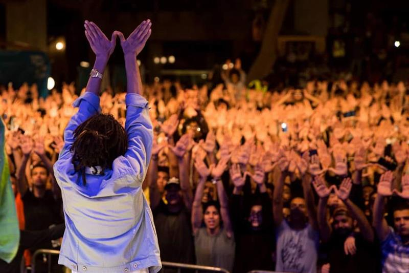
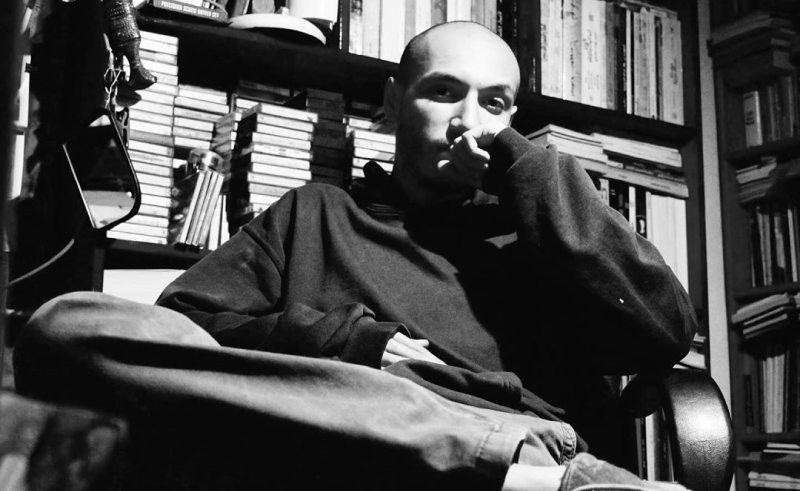

TL;DR The Egyptian Rap Scene
This post can be considered a sequel to our previous post entitled "Sha'bi: An Exploration of The "Mahraganat" in Egypt".

Rappers like Mr. Kordy have existed in Egypt since the 1990s. However, Rap in Egypt started to popularize with the 2011 revolution. Egyptian rap started as a clone of different hip-hop scenes in the foreign world, especially in America. Rappers like Zap Tharwat created motivational songs during the revolution, with local Egyptian lyrics and a typical foreign style. Nevertheless, many underground artists dispute having a non-original style and try to take risks innovating their own styles. Different famous Egyptian rap schools were launched to distinguish the Egyptian rap scene from the global hip-hop one. The first one was the one launched by Abyusif. Youssef Mohamed Altay, known as Abyusif, was a drummer in multiple metal and rock bands. After that, he learned how to write and produce Rap music. His style was distinctive as it used drum progressions similar to those used in progressive metal and rock. Abyusif was famous for being one of the most influential and productive rappers in Egypt as he created more than 700 songs throughout his career (Dalia). Another style is the one raised by Ahmed Nasser, known as Eljoker, which had a distinctive style of writing songs’ lyrics similar to primeval Arabic poetry written proficiently with a story-like structure. While both Eljoker and Abyusif innovated their schools with an external influence from various already-established music genres, Molotof and Marwan Moussa were influenced by local Egyptian genres, creating a distinctive original style that mixed the originality of Sha’by with modern hip hop production.
Ahmed Ashraf, known as Molotof, has started his music career as an electronic producer. In 2016, Molotof published his song “Khabtah,” the first time electronic music and Sha’by collided smoothly, providing listeners with a satisfying audible experience (Adel). Molotof has worked in features with artists who originated the Sha’by music as Sadat and Fifty. These collaborations established his style of mixing rap, electronic music, and Sha’by in the Egyptian rap scene, which is currently named “Molowave.” On the other hand, Marwan Moussa took a different approach where he used Egyptian drums progressively in creating his beats, accompanied by reverb and delay effects on the vocals. Many critics consider Marwan Moussa to be the most talented Egyptian rapper as his distinctive style originated similarly to the exposure of Spanish rap, which shows potential in the globalization of his style.

Egyptian street music has progressed over the years and thrived to achieve distinctiveness and connection to the Egyptians and their culture, from people to people. Thus, genres such as Sha’by and Egyptian rap were developed by Egyptian producers to try to resemble what the country was going through, from the political revolution to the technological revolution and the economic progression. It is obvious that Sha’by music has culturally dominated Egypt’s worldview of the ruling class by asserting it as the accepted and most common cultural norm (Merton). The most precise and accurate way of solidifying the history of modern Egypt is arguably music and its progress; the rise of politically uncensored culturally-flavored songs that connect Egyptians with their issues led to the popularization of such songs in all of Egypt. Currently, the Egyptian rap scene is on its way to being globalized as multiple songs from the scene and the Sha’by scene are scoring hundreds of millions of views across the globe. In addition, famous TV production companies have used Egyptian Sha’by and Rap music in their TV Shows. For instance, Moon Knight, a show Marvel produces, has played multiple Sha’by songs in the show, considering them as what currently represent the local music scene in Egypt.
Works Cited
Abdelhalem, Ahmed. “أغاني المهرجانات في مصر: الانتقاد اللاذع والانتشار الكبير.” السفير العربي, 3 March 2015, https://bit.ly/3KX5Oog. Accessed 9 May 2022.
Abo Ele'la, Elwey. “زاب ثروت: ثورة 25 يناير بداية حقيقية لـ«أندرجراوند».” المصري اليوم, 27 January 2016, https://www.almasryalyoum.com/news/details/881848. Accessed 9 May 2022.
Adel, Fady. “حوار مع مولوتوف: موزع مهرجان بلعب اساسي.” Scene Noise, 17 September 2019, https://bit.ly/3yrSqpJ. Accessed 8 May 2022.
Dalia. “Abyusif Biography.” Last.fm, 17 December 2021, https://www.last.fm/music/abyusif/+wiki. Accessed 8 May 2022.
Merton, Robert. “The Concept of Cultural Hegemony: Problems and Possibilities.” Evergreen, 2016, https://sites.evergreen.edu/politicalshakespeares/wp-content/uploads/sites/226/2015/12/lears-cultural-hegemony.pdf. Accessed 9 May 2022. “Religious supplications and recitations... A history of authentic Egyptian art.” youm7, 2016, https://bit.ly/3MZFYSd. Accessed 6 May 2022.
Posted at Mon, 23 May. 2022 - 03:58:44 AM